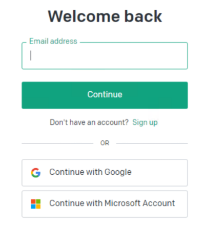

2.登录以后，点屏幕右上角的图标，打开下拉菜单，如图：
3.点击菜单中的“View API Keys”就可以看到已经创建的 API Keys 以及添加 API Key 的按钮
4.点击上图中的“Create new secret key”就可以生成一个新的 OpenAI API key，值得注意的是：因为安全原因，新生成的 API Key 只会显示一次，以后无法查看，所以要复制并保存在安全的地方
5.目前注册的 OpenAI 可以免费试用，一般都送了 5美元信用额度，可以使用到 2023 年7月1日，如图：
文章来源：https://www.vpsdawanjia.com/6455.html